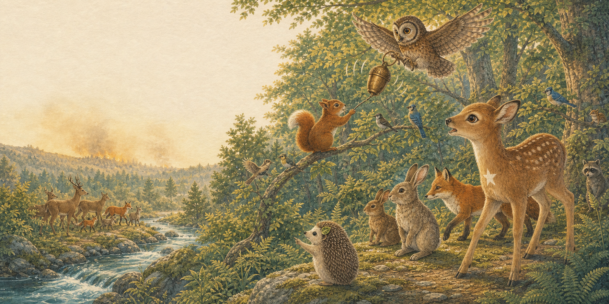
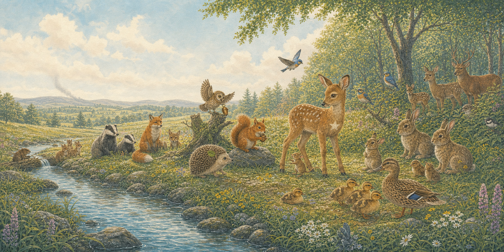

Page one
A thin grey ribbon
One bright morning, Mira Squirrel saw a thin grey ribbon climbing above the faraway hills.
“Smoke,” whispered Otis Owl. Fern Deer listened. Pip Hedgehog felt the ground grow warm beneath his tiny paws.
A forest story about courage, care & climate
Mira, Otis, Fern and Pip learn that small voices can make a very big difference.
Begin the story ↓
Page one
One bright morning, Mira Squirrel saw a thin grey ribbon climbing above the faraway hills.
“Smoke,” whispered Otis Owl. Fern Deer listened. Pip Hedgehog felt the ground grow warm beneath his tiny paws.

Page two
Otis flew high and rang the old acorn bell. Mira hurried along the branches. Fern called to the families below, and Pip found the cool path beside the stream.
“Stay together,” they said. “Water and open ground are this way.”

Page three
Along the sparkling stream, everyone helped. Mira reached a paw to a little dormouse. Pip marched beside the ducklings. Otis watched the sky, while Fern led the gentle procession.
Even the beavers guided water into the thirsty woodland edge. No one was left behind.

Page four
At last, in a green meadow beside the stream, the animals found one another. The sky cleared. The fire was safely contained far away.
They counted every nestling, kit and cub—then listened to the rain patter softly on the leaves.

Page five
“Hot, dry days make fires fiercer,” said Otis. So the friends called a forest council.
Together they would protect streams, grow native trees and ask people to care for the Earth: use clean energy, travel kindly, and speak up for every living thing.
Mira, Otis, Fern and Pip knew the forest would need many friends—animals and people alike—to keep it safe, cool and full of song.